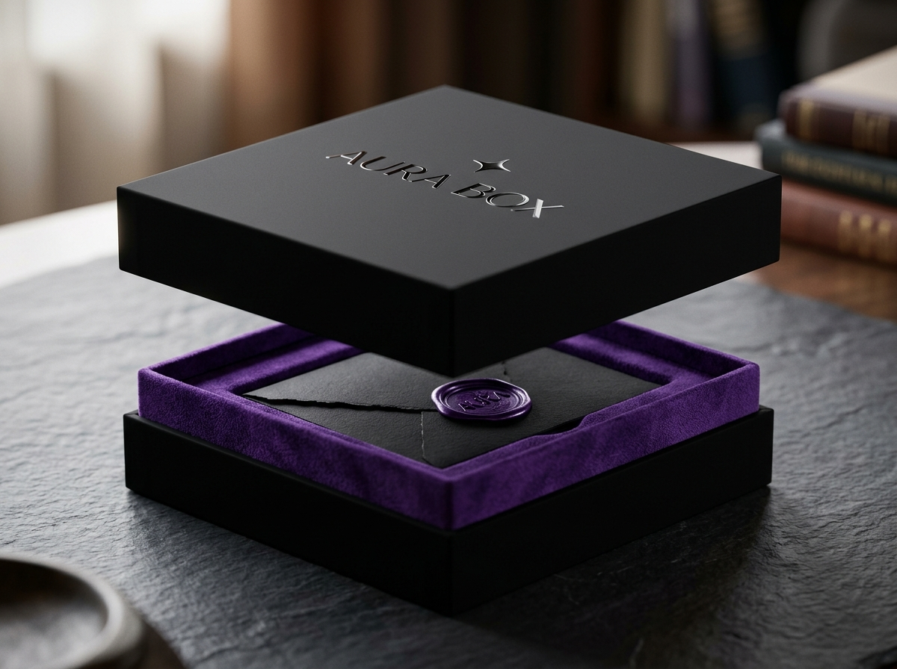
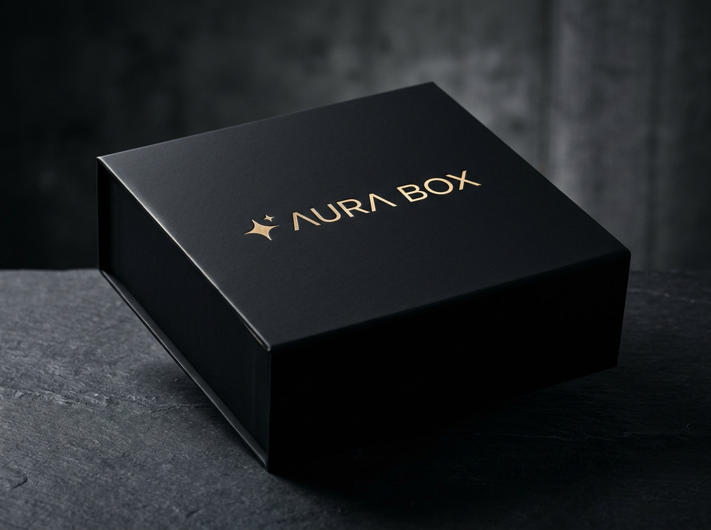
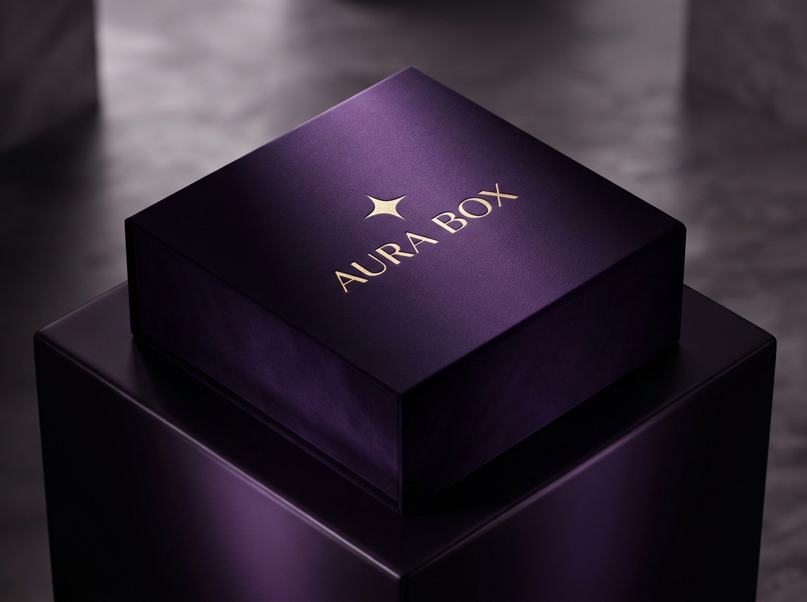
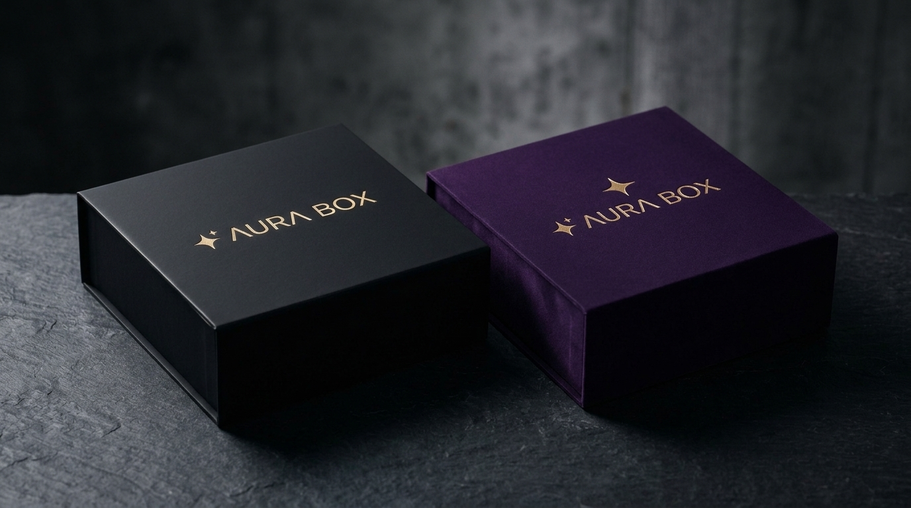

Siz ilişkinize odaklanın,
jestleri bize bırakın.
Unutulma ve ihmal stresini sıfırlayan, 850 TL'den 42.000 TL+'ye kadar yapay zeka gücüyle kişiye özel oluşturulan periyodik lüks hediye kutuları.
Gönderen Kahraman Olur, Aura Box Görünmez Kalır
Müşteriye sadece bir kutu satmıyoruz; "unutulma/ihmal edilme stresini ortadan kaldırma garantisi" ve "düşünülmüş sürpriz konforu" sunuyoruz. Kutuda asla sıradan bir abonelik ibaresi yer almaz; tamamen göndericinin kendi zevki ve el yazısı gibi hissettirilir.
Romantik, özenli ve unutmayan kahraman
Arka plandaki görünmez lüks küratör
Her bütçe ve hediye amacına özel 6 kademeli şeffaf piramit.
3 km² Micro-Hub Kümesi
Depomuz merkezde, seçkin tedarikçilerimiz 3 km çapında. API ile anlık stok & fiyat takibiyle taze çiçek ve gurme ürünler aynı gün VIP kurye ile çıkış yapar.
"Sıradan Bir Salı" Etkisi
Hediyeler sadece ayın 1'inde gitmez. Ayın rastgele bir gününde kapıyı çalan beklenmedik sürpriz, alıcıda 10 kat daha yüksek dopamin ve mutluluk yaratır.
Secret Cheat Sheet
"Ne broşu?" rezilliğini önleyen canlı spoiler sistemi. Kutu teslim edildiği an gönderene detaylı SMS gider, alıcı aradığında gönderen her detayı bilir.
Simülasyonu İncele →Neden Sadece Hediye Satmıyoruz?
İlişkilerde ihmal edilme korkusunu sıfırlayan, düşünülmüş lüks sürpriz konforu.
"Unutulma Stresini Ortadan Kaldırma Garantisi"
Bir ilişkiyi yıpratan en büyük etken sevgisizlik değil; günlük hayatın koşturmacasında karşı tarafın kendisini "ihmal edilmiş veya sıradanlaşmış" hissetmesidir. Doğum günleri, tanışma yıldönümleri veya haftalarca süren yoğun iş temposunun ardından gelen boşluklar...
- Son dakika çiçek sepeti siparişi
- Solgun güller, klişe hediye kutuları
- "Aklıma son anda geldi" hissi
- Sürekli takvim takip etme stresi
- Önceden kurgulanmış akıllı takvim
- Niche parfümler, pırlanta, gurme lezzetler
- Kişiye özel el yazısı duygu notu
- Sıfır zihinsel yük, %100 kahramanlık
72 Saat Önceki Gizli Concierge
Teslimattan 3 gün önce göndericiye otomatik WhatsApp pingi atılır. Özel bir not eklemek isterse yazar, boş bırakırsa küratörlerimiz onun adına şık bir kart düzenler.
Aboneliği İptal Etmenin İlişkisel Bedeli
Geleneksel abonelik modellerinde (SaaS, eğlence, kutu e-ticaret) kullanıcı iptal butonuna bastığında yalnızca servisi kaybeder. Aura Box'ta ise iptal etmek, hayatındaki en değerli insana "Artık senin için çabalamıyorum, ilişkinin rutinine teslim oldum" mesajı vermekle eşdeğerdir. Bu derin duygusal bariyer, organik olarak sektörün en düşük churn oranını üretir.
Kutu Başına Şeffaf Lüks Kademeleri
Aylık düzenli abonelikte en avantajlı sadakat fiyatı; seyrek ve özel günlerde esnek teslimat.
Aura Petite
Yeni başlayan flörtler, yakın arkadaşlar veya haftalık moral/self-reward jestleri.
- 🌱 Tasarım sukulent veya mini cam teraryum
- 🍫 Butik el yapımı dolgulu artisan çikolata
- 🕯️ Doğal soya mumu & aromaterapi yağı
- ✉️ Kişiye özel motto & el yazısı kart
Aura Signature
Sevgiliye, eşe ve anneye düzenli zarafet. Kusursuz bir romantik ilişki sigortası.
- 💐 Nitelikli butik tasarım çiçek buketi (Aynı gün kurye)
- ☕ Single-origin gurme kahve & trüf çikolata
- 🏺 Yerli tasarımcı seramik kupa veya kırtasiye
- ✨ Konsept organik cilt bakım / ritüel seti
Aura Prestige
Lüks zevklere sahip partnerler, varlıklı profesyoneller ve prestijli özel jestler.
- ✨ Niche parfüm (Niş koku evlerinden travel boy)
- 💍 Tasarım 925 ayar gümüş / yarı değerli doğal taş takı
- 👜 El yapımı hakiki deri kartlık veya pasaport kılıfı
- 🎭 Çift kişilik özel tiyatro / seramik workshop bileti
Aura Privé
İnce zevklere sahip partnerler, terfi kutlamaları ve zarif altın/mücevher anları.
- 👑 14 Ayar altın minimalist kolye veya pırlanta küpe
- 🧴 Tam boy (100ml) Fransız extrait parfüm (Özel gravürlü)
- 🧣 İtalyan saf ipek fular veya el dokuması kaşmir şal
- 🍷 Şef masası (Chef's Table) 2 kişilik tadım deneyimi
Aura Grand Atelier
Büyük yıldönümleri, evlilik teklifleri ve kalıcı miras bırakan lüks zanaat parçaları.
- 💎 HRD/GIA sertifikalı 0.40ct pırlanta / safir mücevher
- 🧳 Toskana el dikişi hakiki deri seyahat çantası / saat rulosu
- 🍇 Butik bağ evinde 1 gece gurme konaklama & şarap tadımı
- 📜 Baş küratör onaylı balmumu mühürlü el yazısı mektup
Aura Black
Sınır tanımayan lüks. Pırlanta, altın, İsviçre saat aksesuarları ve kişisel kaçamaklar.
- 💎 Sertifikalı gerçek pırlanta / özel tasarım altın mücevher
- ⌚ Lüks İsviçre saat aksesuarları / kurma kutusu
- 🚁 Helikopter transferli 5 yıldızlı süit konaklama davetiyesi
- 🎩 7/24 kişisel hediye konsiyerji ve zırhlı kurye teslimat
Apple Hassasiyetinde "Sessiz Lüks" Ambalaj
Vakumlu yavaş açılış toleransı, 90° keskin V-groove kenarlar, parmak izi tutmayan kadife mat soft-touch yüzey ve prizmatik sıcak yaldız işçiliği.

Dual-Tone Teleskopik Açılış & Mor Kadife Yatak
Apple kutularındaki slow-release vakumlu hava tahliyesi. Mat obsidyen siyah kapak yukarı çekildiğinde derin kraliyet moru kadife iç yatak ve mor balmumu mühürlü el yazısı zarf açığa çıkar.

Mat Obsidyen Siyah
1400 GSM ağır gri mukavva üzeri parmak izi bırakmayan velvet mat kaplama. 0.5 mm derinliğe gömülü (blind deboss) şampanya yaldız ışıltı yıldızı.

Kraliyet Asaleti Moru
Gölgelerde siyaha çalan, ışık vurduğunda derin mürdüm ve ametist ışıltısı sunan monolitik zarafet. Merkezde dengeli yaldızlı tipografi.

Taktil, İşitsel ve Kokusel Açılış Mühendisliği
Aura Box yalnızca bir karton kutu değil; mücevher sandığı ağırlığında, duyuları harekete geçiren özel bir deneyim nesnesidir:
-
✦
Akustik "Fıss" Açılış Hissi: Kapak kaldırıldığında milimetrik tolerans sayesinde hava yavaşça boşalır ve 3 saniyelik bir yavaş açılma seremonisi yaşatır.
-
✦
Olfactory (Kokusel) Difüzyon: Kapağın altındaki iç yüzeye mikrokapsüllenmiş sedir & beyaz iris esansı uygulanır; kutu açıldığı an ortama dinlendirici lüks bir koku yayılır.
-
✦
Sıfır Dış Markalama: Dış nakliye kolisi %100 markasız kraft mühürlüdür; kapı çaldığında evdeki kimse içinde ne olduğunu teslimat anına kadar anlayamaz.
Aura Living Intelligence — Kişiselleştirilmiş Kürasyon Motoru
Görsel stil taraması (Vision AI), 72 saat önceki anlık duygu fısıltısı ve her teslimat sonrası sensory RLHF geri bildirimiyle sürekli evrilen yaşayan yapay zeka kürasyon motoru.
Living Intelligence Parametreleri
Aura Living Intelligence Kürasyona Hazır
Sol panelden profil, stil DNA'sı ve bütçeyi belirleyin. Çok modlu zekâ motorumuz 3 km² kümedeki canlı partner stoklarını saniyeler içinde zevk haritanıza eşlesin.
30 Tedarikçinin Canlı API Stoğundan 1 Aura Box'ın Doğuşu
Aura Box statik katalog ürünlerini paketlemez. 3 km² yarıçapındaki 30 bağımsız butik ve zanaatkarın canlı envanteriyle doğrudan konuşur; 0.4 saniye içinde sıfır hata ve maksimum zarafet ile o aya özel tekil kutuyu oluşturur.
Kargaşayı Önleyen Yapılandırılmış Kayıt
Serbest metin kaosu yerine kesin kilitler, alerji filtreleri ve hatasız takvim yönetimi.
Alıcı Kimliği & Persona
Kime hediye gidiyor? Eş, anne, baba, iş ortağı veya kendim. Yaş grubu, meslek ve ilgi alanları tek tıkla seçilir.
Kesin Hayırlar & Alerjiler
Ters köşeyi sıfırlayan filtre. Alerjik ürünler, sevilmeyen kokular veya alkol/şeker hassasiyetleri algoritmaya kilitlenir.
Kritik Takvim Kilitleri
Doğum günü, tanışma yıldönümü ve Sevgililer Günü takvime sabitlenir. Sistem o ayların teslimatını o kesin tarihe bağlar.
Her Kutudan Sonra Öğrenen Sistem
Göndericiye ve dilerse alıcıya kutu açıldıktan sonra sessiz bir 1-5 yıldız memnuniyet puanlaması yaptırılır. Alınan geri bildirimlerle makine öğrenimi modeli eğitilir; bir sonraki kutu hedefin zevkine matematiksel olarak daha da yaklaşır.
"Eşim kolyenin tasarımına ve kutunun kokusuna bayıldı. Çikolatanın bitter olması tam isabet olmuş!"
Sesli Not Analizi & QR Sürpriz Kartı
Kullanıcı araba sürerken veya meşgulken WhatsApp'a 10 saniyelik bir ses notu atabilir: "Bu ara çok başı ağrıyor, işle ilgili çok stresli; dinlendirici spa ve lavanta tonları ağırlıklı olsun...".
Aura AI bu ses kaydını iki amaçla kullanır:
- 1. Akustik Duygu Analizi: Ses tonundaki yorgunluk ve stres seviyesini ölçüp o ayki kutunun koku, mum ve doku ağırlığını sakinleştirici bileşenlere kalibre eder.
- 2. Mühürlü QR Hatıra Kartı: Bu samimi ses veya video kaydı, kutunun içindeki lüks balmumu mühürlü karta dinamik QR olarak basılır. Alıcı kamerayı tuttuğunda eşinin kendi sesinden duygulandıran mesajı yankılanır.
"Senin İçin Bir Fısıltı Bıraktım..."
3 km² Yarıçapında Hiper-Lokal Micro-Hub
Merkez depomuz ortada; seçkin yerel zanaatkarlar 3 km'lik kümede. Sıfır bayatlama, canlı API stok takibi.
Merkez Depo & Çevre Partnerler
Çift Hatlı Akıllı Sevkiyat
Çiçek gibi taze ürünler standart kargo ile taşınamaz; ezilir ve solar. Aura Box bu riski iki ayrı dağıtım hattıyla yönetir:
Taze tasarım çiçekler, yaş çikolatalar ve makaronlar. Sadece lokal kurye ağıyla 2-4 saatte adrese elden teslim edilir.
Mücevher, niche parfüm, ipek fular, tasarım kırtasiye. Özel mühürlü sert kutularla tüm Türkiye'ye 24 saatte sigortalı sevk.
Milyonlarca liralık mücevher veya lüks ürün depoda bekletilmez; sermaye kilitlenmez. Sipariş teslim günü 3 km² kümedeki butiklerden API ile çekilip montajlanır.
Birlikte Çalışacağımız Seçkin Partner Yelpazesi
Aura Box, sıradan toptancılar yerine 3 km² yarıçapındaki en prestijli yerel atölyeler ve bağımsız zanaatkarlarla API entegrasyonu kurar. Her dikey, yüksek duygusal değer ve kusursuz kalite standartlarına göre seçilir.
Mücevher & Tasarım Takı
Kapalıçarşı & Nişantaşı bağımsız atölyeleri, 925 ayar rodyumlu gümüş, doğal aytaşı/ametist ve sertifikalı pırlanta kasaları.
Taze Çiçek & Botanik
Tasarım butik çiçekçiler, stabilize solmayan Ekvador gülleri ve ithal orkide & mikro teraryum laboratuvarları (Aynı gün VIP kurye).
Niche Parfüm & Koku
Grasse esanslı Extrait de Parfum atölyeleri, el dökümü mermer kaideli soya mumları ve ahşap çubuklu lüks oda difüzörleri.
Artisan Gurme & Lezzet
Günlük el yapımı altın varaklı Belçika trüfleri, single-origin mikro kavrum çekirdek kahveler ve artisan organik tatlar.
Lüks Deri & İpek Tekstil
El dikişi hakiki dana derisi saat seyahat ruloları, Como & Bursa saf ipek tasarım fularları ve Moğolistan kaşmir şalları.
Seramik & Masa Sanatı
Numaralandırılmış bağımsız sanatçı seramikleri, el tornası fincanlar, doğal mermer tütsülükler ve prinç masa heykelleri.
Deneyim & Özel Kaçamak
Butik bağ evi konaklama voucher'ları, şef eşliğinde gastronomi tadım masaları, seramik & koku atölyesi çift kişilik davetiyeleri.
Koleksiyon & Duygu Objeleri
Steiff ekolü el dikişi kaşmir hatıra ayıları, kişiye özel gravürlü prinç dolma kalemler ve el yapımı mekanik melodi kutuları.
Sipariş Yönetim Paneli: Örnek 3. Ay Sevkiyatı Nasıl Hazırlanıyor?
Yapay zeka statik bir katalog seçicisi değildir. 38 zanaatkarın canlı API envanteriyle konuşur; alıcının geçmiş geri bildirimlerini (RLHF) ve 72 saat önceki ses fısıltısını sentezleyerek bütçeyi ve ürünleri otonom olarak kilitler.
Sipariş #AB-8921
Abone: Caner K. • Alıcı: Melis T. (Eş)Şakayık Buketi & 925 Aytaşı Kolye
Rose Altın Bileklik & Belçika Trüfleri
"Bu hafta büyük bir terfi aldı, kutlama havasında olsun ama çok başı ağrıyor, yorgun..."
2.450 Malzeme Havuzu
Nişantaşı Micro-Hub (1.4 km)Siparişi otonom derlemek için yukarıdaki simülasyon butonuna tıklayın.
CS Sandık Arbitrajı
Signature KademeOlası Tehlikeler ve Önleyici Çözümler
Sistemi kusursuz kılan, en ince detayına kadar düşünülmüş operasyonel güvenlik kalkanları.
"Ne Gönderildiğini Bilmeme" Paradoksu
Kutu kurye tarafından teslim edildiği an göndericiye özel WhatsApp bildirimi düşer:
Ters Köşe ve Zevk Uyuşmazlığı
- Kesin Hayırlar (Hard Exclusions): Onboarding sırasında alerjiler, sevilmeyen koku/metal tipleri sisteme kilitlenir.
- Sessiz Değişim Kartı: Kutuda şık bir QR kod yer alır. Alıcı dilerse kimse kırılmadan 48 saat içinde ürünü sessizce değiştirebilir.
- Geri Bildirim Döngüsü: Yapay zeka her kutudan sonra zevk haritasını günceller.
Taze Çiçek ve Gıda Bozulma Riski
Taze ürünler yalnızca yerel VIP kurye ağı (3 km² micro-hub) ile dağıtılır. Şehirlerarası gönderimlerde ise taze çiçek yerine uzun ömürlü lüks kuru aranjmanlar, aromaterapi kitleri ve kalıcı tasarım objeler devreye sokulur.
Rutinleşme ve Sürpriz Hissinin Kaybı
Kritik yıldönümleri dışındaki aylarda paket, göndericinin onayıyla ayın rastgele bir iş gününde teslim edilir. Hiçbir özel gün yokken gelen kutu, alıcıda rutin tarihlere göre 10 kat daha derin minnettarlık yaratır.
Kürasyon Ortaklıkları ve Birim Ekonomisi
Nakit akışını stabilize eden kurumsal bacak, tasarımcı iş birlikleri ve %46 brüt marj gücü.
Şirketler İçin VIP Sadakat Motoru
Şirketlerin kilit müşterilerine, C-level yöneticilerine ve ajanslarına sıradan promosyon ürünleri yerine yüksek prestijli, kişiselleştirilmiş hediyeler sunması churn oranını düşürür.
Üst düzey transferler ve yeni ortaklar için lüks hoş geldin deneyimi.
Gayrimenkul, finans ve otomotiv müşterilerine periyodik jest akışı.
Yıllık sözleşmeli kurumsal aboneliklerle garantili MRR (Aylık Tekrarlayan Gelir).
Şirket logolu kaba kutular yerine zarif el mühürlü kart tasarımı.
Tanınmış Yerli Sanatçılar & Markalar
Yerli tasarımcılar, seramik sanatçıları ve niche koku evleriyle yapılan "Co-Branded" anlaşmalar her iki tarafa da benzersiz avantajlar sağlar:
Tek Bir Kutu Üzerinden Marj Kırılımı
Ürün Tedarik Maliyeti (Toptan API İndirimli)
Mühürlü Lüks Kutu & Kaligrafi Kart
3 km² Aynı Gün VIP Kurye Teslimatı
Aura Box Brüt Kârı (Kutu Başı)
Yüksek Yaşam Boyu Değeri
Hediye aboneliği churn oranı en düşük e-ticaret modellerinden biridir; çünkü sevdiklerine jest yapmayı bırakmak istemezler.
Toptan Satın Alma Gücü & "CS Sandık" Değer Arbitrajı
Aura Box ürünleri perakendeden değil; doğrudan 3 km² kümesindeki bağımsız zanaatkar ve butiklerden toptan konsinye API anlaşmalarıyla (%50-%60 toptan iskonto) temin eder. Kutuya konulan ürünler ise Nişantaşı / Bebek vitrinlerindeki gerçek perakende piyasa fiyatıyla değerlenir.
Kusursuz taze çiçek, artisan tat ve kaligrafi ile stabil yüksek tatmin.
Tam boy niş extrait parfüm veya gümüş tasarım takı sürprizi.
0.25ct pırlantalı kolye veya butik otel hafta sonu konaklama bileti!
1. Yılın Sonunda 100.000 Müşteri: Gelir & Segment Projeksiyonu
İstanbul (7 Hub), Ankara (2 Hub), İzmir (2 Hub) ve Bursa (1 Hub) olmak üzere toplam 12 hiper-lokal Micro-Hub ağında 100.000 aktif aboneye ulaşıldığında oluşan ciro, nakit akışı ve kârlılık matrisi.
| Kademe | Fiyat (₺ / Kutu) | Abone Payı (%) | Aktif Abone Sayısı | Aylık Ciro (MRR) | Karakteristik Profil & Hacim Dinamiği |
|---|---|---|---|---|---|
| Aura Petite | 850 ₺ | 35.000 | 29.750.000 ₺ | Genç profesyoneller, flört, arkadaşlık ve düzenli haftalık moral jestleri | |
| Aura Signature ⭐ | 2.600 ₺ | 40.000 | 104.000.000 ₺ | Ana romantik kitle; evli çiftler, taze çiçek, artisan çikolata ve ambiyans | |
| Aura Prestige | 5.500 ₺ | 15.000 | 82.500.000 ₺ | Varlıklı kitle, yöneticiler, 925 ayar takı, niche extrait parfüm ve tiyatro | |
| Aura Privé | 12.500 ₺ | 6.000 | 75.000.000 ₺ | 14K altın minimalist takı, tam boy parfüm, şef masası degustasyonu | |
| Aura Grand Atelier | 24.000 ₺ | 3.000 | 72.000.000 ₺ | Sertifikalı pırlanta, İtalyan deri hafta sonu çantası, lüks bağ evi kaçamağı | |
| Aura Black | 42.000+ ₺ | 1.000 | 42.000.000 ₺ | Ultra-lüks kurumsal patronlar, saat kurma kutusu, helikopterli konaklama | |
| TOPLAM / ORTALAMA | 100% | 100.000 Abone | 405.250.000 ₺/ay | Ortalama Sepet (ARPU): 4.052 ₺ / ay | |
50 Üst Düzey VIP Hesap İçin Kurumsal Yatırım Getirisi
Kurumsal şirketlerin ana müşteri veya kilit ortak kaybı milyonlarca liralık hasar yaratır. Sıradan kurumsal ajandalar veya ucuz hediyeler çöpe giderken, Aura Box'ın mühürlü artisan kürasyonları karar vericilerde kalıcı duygusal sadakat oluşturur.
Geleneksel Pazara Karşı Aura Box Rekabet Bariyeri
Piyasa ya ucuz ve kaba kutu e-ticaretiyle (Çiçeksepeti, Muhiku) ya da pahalı ama ruhsuz mağazacılıkla (Beymen Gift) dolu. İlişki psikolojisini, yapay zekayı ve tam gizliliği birleştiren yegane lüks teknoloji kulübüyüz.
| Stratejik Kriter | Geleneksel Kutu / Çiçeksepeti | Lüks Mağazacılık (Beymen/Vakko) | ✦ AURA BOX |
|---|---|---|---|
| Kişiselleştirme Derinliği | ✕ Klişe Katalog Seçimi | ~ Standart Hediye Çeki | ✓ Living AI (Vision & Ses DNA'sı) |
| Dış Koli Gizliliği | ✕ Kaba Logolu Koli | ~ Büyük Marka Poşeti | ✓ %100 Markasız Stealth Koli |
| Mahcubiyet Önleyici Spoiler | ✕ Yok (Gönderen unutur) | ✕ Faturada fiyat ifşası | ✓ Secret WhatsApp Spoiler SMS |
| Taze & Kuru Çift Hat Lojistiği | ✕ Ezilen kargo çiçekleri | ~ Sadece kuru lüks mağaza | ✓ 3 km² JIT Lokal Kurye + Kuru Hat |
| Sürpriz Zamanlama Etkisi | ~ Sadece belirli gün teslim | ✕ Elden son dakika alımı | ✓ "Sıradan Bir Salı" Dopamini |
| Duygusal Churn Koruması | ✕ Yüksek (%10+ Churn) | ✕ Abonelik Yok (Tekil Alım) | ✓ %1.4 Churn (İlişkisel Kilitlenme) |
Gülümseyen Tutunma Eğrisi (Smiley Face Retention)
Standart SaaS ve e-ticaret modellerinde kullanıcılar aylar geçtikçe sistemi terk eder (düşen eğri). Aura Box'ta ise kullanıcılar sistemde kaldıkça yaklaşan yıldönümleri, terfiler ve evlilik günleri için paketlerini Petite'ten Prestige ve Black Custom'a yükseltirler.
3 Aşamalı Büyüme Yol Haritası
İstanbul micro-hub pilotundan global ilişki konsiyerjliğine uzanan vizyon.
Pilot Micro-Hub (İstanbul)
- Kadıköy & Nişantaşı 3 km² pilot micro-hub depoları
- Kontrollü Lansman: 500 VIP Davetiye & Özel Bekleme Listesi (Operasyonel darboğazı önleme)
- Signature (3.000 ₺) ve Prestige (6.500 ₺) lansmanı
- Canlı WhatsApp concierge bot & QR sesli kart entegrasyonu
Ulusal Yayılım & B2B
- Ankara ve İzmir micro-hub depolarının açılması
- Aura Black (50.000 ₺+) ultra-lüks serisi
- B2B Kurumsal sadakat portalının lansmanı
- 3.000 aktif aboneye ulaşım
Otonom AI & MENA Açılımı
- Predictive Relationship AI (İlişki sinyalleri analitiği)
- Dubai & Riyad lüks segment açılımı
- Uluslararası lüks moda evleriyle global iş birlikleri
- 15.000+ aktif abone ve karlı operasyon